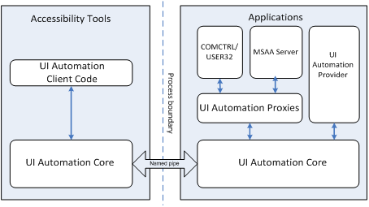

From Wikipedia, the free encyclopedia
Microsoft UI Automation (UIA) is an Application Programming Interface (API) for User Interface (UI) accessibility that is designed to help Assistive Technology (AT) products interact with standard and custom UI elements of an application (or the operating system ) as well as to access, identify, and manipulate an application's UI elements. AT products work with applications in order to provide better access for individuals who have physical or cognitive difficulties, impairments, or disabilities. Some examples of this are screen readers for users with limited sight, on screen keyboards for users with limited physical access, or captions for users with limited hearing.
UIA is similar to Microsoft Active Accessibility (MSAA) in that it provides a means for exposing and collecting information about user interface elements and controls to support user interface accessibility and software test automation. However, UIA is a newer technology that provides a much richer object model than MSAA, and is compatible with both Win32 ® and the .NET Framework. UIA is designed so that it can be supported across platforms other than Microsoft Windows. For controls and frameworks written from scratch, UIA is recommended today. While MSAA is handy for relatively simple controls, the technology doesn’t support the complexity of modern user interfaces.
The current and latest specification of UIA is found as part of the Microsoft UI Automation Community Promise Specification.
UIA has been supported by in Windows XP , Windows Vista , Windows Server 2003 , and Windows Server 2008. UIA will be released in Windows 7 as part of the new Windows Automation API framework, where UIA is a subset of that framework.
Developers can utilize either the managed UI Automation API or the native UI Automation API; the native API is prominent between the two.
The managed UI Automation API is a part of the overall .NET Framework. It was included starting in version 3.0 of the .NET Framework.
The native UI Automation API (provider) is included as part of the Windows Vista and Windows Server 2008 SDK. The native UI Automation API is also distributed with the .NET Framework. The native UI Automation client API is currently being developed, and will be available for the Windows platform in the future.
★ Co-exist with and use MSAA, but do not inherit problems that exist in MSAA.
★ Provide an alternative to MSAA that is simple to implement.
The Microsoft Windows implementation of UIA features COM -based interfaces and managed interfaces that are introduced with Microsoft .NET Framework. An API reference is available for both managed and unmanaged code.
Figure 1 below shows the architecture of UIA. Applications such as word processing programs are called servers in Microsoft Active Accessibility (MSAA) and providers in UIA because they serve or provide information about their user interfaces (UI). Accessibility tools such as screen readers are called clients in both MSAA and UIA because they consume and interact with application UI information.
With UIA, the UIA Core component (UIAutomationCore.dll) is loaded into the processes of both the accessibility tools and applications. This component manages cross-process communication, and it also provides higher-level services, such as searching for elements by property values.

UIA exposes every piece of the UI to client applications as an Automation Element. Elements are contained in a tree structure, with the desktop as the root element. Clients can filter the raw view of the tree as a control view or a content view. Applications can also create custom views.
Automation Element objects expose common properties of the UI elements they represent. One of these properties is the control type, which defines its basic appearance and functionality as a single recognizable entity (e.g., a button or check box).
In addition, elements expose control patterns that provide properties specific to their control types. Control patterns also expose methods that enable clients to get further information about the element and to provide input.
Within the UIA tree there is a root element (RootElement) that represents the current desktop and whose child elements represent application windows. Each of these child elements may contain elements representing pieces of UI such as menus, buttons, toolbars, and list boxes. These elements, in turn, can contain other elements, such as list items.
The UIA tree is not a fixed structure and is seldom seen in its totality because it might contain thousands of elements. Parts of the tree are built as they are needed, and the tree can undergo changes as elements are added, moved, or removed.
Having a well-known identifier allows assistive technology (AT) devices to more easily determine what types of controls are available in the user interface (UI) and how to interact with the controls. A human-readable representation of the UIA control type information is available as a LocalizedControlType property, which can be customizable by control or application developers.
UIA uses control patterns to represent common control behaviors. For example, the Invoke control pattern is used for controls that can be invoked (such as buttons) and the Scroll control pattern is used for controls that are scrollable viewports (such as list boxes, list views, or combo boxes). Because each control pattern represents a separate functionality, they can be combined to describe the full set of functionality supported by a particular control.
UIA providers expose properties on UIA elements and the control patterns. These properties enable UIA client applications to discover information about pieces of the user interface (UI), especially controls, including both static and dynamic data.
UIA event notification is a key feature for assistive technologies (AT) such as screen readers and screen magnifiers. These UIA clients track events that are raised by UIA providers that occur within the UIA, and use the information to notify end users.
UIA exposes the textual content, including format and style attributes, of text controls in UIA-supported platforms. These controls include, but are not limited to, the Microsoft .NET Framework TextBox and RichTextBox as well as their Win32 equivalents.
Exposing the textual content of a control is accomplished through the use of the TextPattern control pattern, which represents the contents of a text container as a text stream. In turn, TextPattern requires the support of the TextPatternRange class to expose format and style attributes. TextPatternRange supports TextPattern by representing a contiguous text span in a text container with the Start and End endpoints. Multiple or disjoint text spans can be represented by more than one TextPatternRange objects. TextPatternRange supports functionality such as clone, selection, comparison, retrieval and traversal.
UIA can also be useful as a framework for programmatic access in automated testing scenarios. In addition to providing more refined solutions for accessibility, it is also specifically designed to provide robust functionality for automated testing.
Programmatic access provides the ability to imitate, through code, any interaction and experience exposed by traditional user interactions. UIA enables programmatic access through five components:
UIA was initially available on Windows Vista and Windows Server 2008, and it was also made available to Windows XP and Windows Server 2003 as part of .NET Framework 3.0. It has been integrated with all subsequent Windows versions, up to and including the yet to be released Windows 7.
Novell's Mono Accessibility project is an implementation of the UIA Provider and Client specifications targeted for the Mono framework. Additionally, the project provides a bridge to the Accessibility Toolkit (ATK) for Linux assistive technologies (ATs). Novell is also working on a bridge for UIA-based ATs to interact with applications that implement ATK.
★ Microsoft Active Accessibility (MSAA ): UIA is the successor to MSAA. However, since there are still MSAA based applications in existence, bridges are used to allow communication between UIA and MSAA applications. So information can be shared between the two APIs, an MSAA-to-UIA Proxy and UIA-to-MSAA Bridge were developed. The former is a component that consumes MSAA information and makes it available through the UIA client API. The latter enables client applications using MSAA access applications that implement UIA.
Accessible Rich Internet Applications ★ (ARIA): The UIA AriaRole and AriaProperties properties can provide access to the ARIA attribute values corresponding to an HTMLelement (which can be exposed as an automation element by web browsers). General mapping from ARIA attributes to UIA is also available.
★ Windows Automation API: Starting with Windows 7, Microsoft is packaging its accessibility technologies under a framework called Windows Automation API. Both MSAA and UIA will be part of this framework.
★ Mono Accessibility Project: On November 7, 2007, Microsoft and Novell Inc. , after completion of a year of their interoperability agreement, announced that they would be extending their agreement to include accessibility. Specifically, it was announced that Novell would develop an open source adapter allowing the UIA framework to work with existing Linux accessibility projects such as the Linux Accessibility Toolkit (ATK), which ships with SUSE Linux Enterprise Desktop , Red Hat Enterprise Linux and Ubuntu Linux. This would eventually make UIA cross-platform.
1. Darryl K. Taft, Microsoft Promotes Cross-Platform Accessibility Tech , EWeek (2005-11-28), accessed 2007-02-07; Microsoft, "Microsoft's New Accessibility Model To Be Offered as Cross-Platform Solution for Industry" , accessed 2007-02-06.
2. Microsoft, UI Automation and Microsoft Active Accessibility , accessed 2007-02-07.
3. Microsoft, UI Automation Overview , accessed 2007-02-07.
4. Miguel de Icaza and Philippe Cohen, "Mono, Mainsoft and Cross-Platform Enterprise Development" , Enterprise Open Source Magazine (2007-01-14), accessed 2007-02-07.
The Olive project
Microsoft and Novell Celebrate Year of Interoperability, Expand Collaboration Agreement
UI Automation Open Specification Promise
History of Microsoft's Commitment to Accessibility
UI Automation Community Promise
UI Automation Verify (UIA Verify) Test Automation Framework